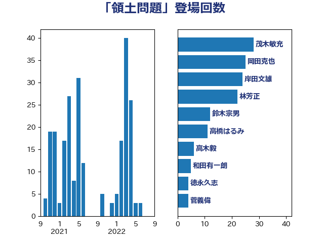

単語「領土問題」

| 茂木敏充 | 自由民主党 | 28 回 |
| 岡田克也 | 立憲民主党 | 25 回 |
| 岸田文雄 | 自由民主党 | 24 回 |
| 林芳正 | 自由民主党 | 22 回 |
| 鈴木宗男 | 日本維新の会 | 12 回 |
| 高橋はるみ | 自由民主党 | 11 回 |
| 高木毅 | 自由民主党 | 6 回 |
| 和田有一朗 | 日本維新の会 | 5 回 |
| 徳永久志 | 立憲民主党 | 4 回 |
| 菅義偉 | 自由民主党 | 4 回 |
| 小西洋之 | 立憲民主党 | 3 回 |
| 赤澤亮正 | 自由民主党 | 3 回 |
| 高木かおり | 日本維新の会 | 3 回 |
| こやり隆史 | 自由民主党 | 2 回 |
| 和田義明 | 自由民主党 | 2 回 |
| 大野敬太郎 | 自由民主党 | 2 回 |
| 小寺裕雄 | 自由民主党 | 2 回 |
| 小田原潔 | 自由民主党 | 2 回 |
| 木原誠二 | 自由民主党 | 2 回 |
| 松原仁 | 立憲民主党 | 2 回 |
| 福山哲郎 | 立憲民主党 | 2 回 |
| 紙智子 | 日本共産党 | 2 回 |
| 舞立昇治 | 自由民主党 | 2 回 |
| 青山大人 | 立憲民主党 | 2 回 |
| 高木啓 | 自由民主党 | 2 回 |
| 鷲尾英一郎 | 自由民主党 | 2 回 |
| 上田清司 | 国民民主党 | 1 回 |
| 上野賢一郎 | 自由民主党 | 1 回 |
| 世耕弘成 | 自由民主党 | 1 回 |
| 城内実 | 自由民主党 | 1 回 |
| 大塚耕平 | 国民民主党 | 1 回 |
| 山下芳生 | 日本共産党 | 1 回 |
| 山谷えり子 | 自由民主党 | 1 回 |
| 掘井健智 | 日本維新の会 | 1 回 |
| 本村伸子 | 日本共産党 | 1 回 |
| 杉尾秀哉 | 立憲民主党 | 1 回 |
| 杉田水脈 | 自由民主党 | 1 回 |
| 松野博一 | 自由民主党 | 1 回 |
| 枝野幸男 | 立憲民主党 | 1 回 |
| 柴田巧 | 日本維新の会 | 1 回 |
| 森屋宏 | 自由民主党 | 1 回 |
| 田村智子 | 日本共産党 | 1 回 |
| 秋葉賢也 | 自由民主党 | 1 回 |
| 赤羽一嘉 | 公明党 | 1 回 |
| 辻清人 | 自由民主党 | 1 回 |
| 野田佳彦 | 立憲民主党 | 1 回 |
| 鈴木敦 | 国民民主党 | 1 回 |
| 阿部知子 | 立憲民主党 | 1 回 |
| 青山繁晴 | 自由民主党 | 1 回 |
| 青柳仁士 | 日本維新の会 | 1 回 |
| 音喜多駿 | 日本維新の会 | 1 回 |
| 鰐淵洋子 | 公明党 | 1 回 |